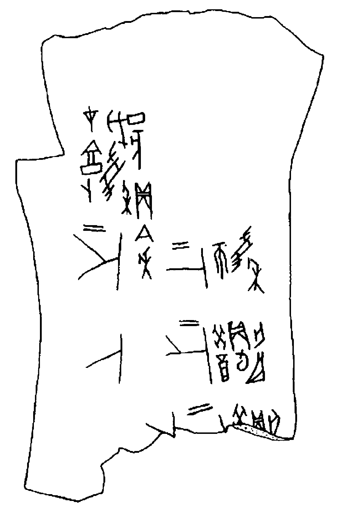
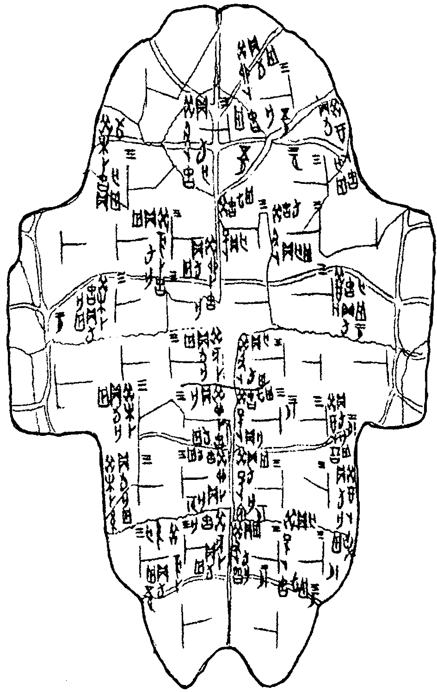

О древнейшем — архаическом — периоде истории китайского языка мы можем судить по «гадательным надписям», относящимся к XIV–XI вв. до н. э., т. е. ко второй половине эпохи Шан-Инь.
Иньские гадательные тексты были впервые обнаружены в 1899 г. Систематические раскопки иньской столицы близ современного Аньяна (провинция Хэнань) открыли для науки несколько десятков тысяч надписей — древнейших письменных памятников Восточной Азии. До наших дней они могли сохраниться благодаря тому, что были сделаны на материале, не подверженном гниению, — на бычьих лопатках и панцирях черепах.
Эти предметы использовались при дворе иньского правителя (вана) для гаданий, изо дня в день совершавшихся специальными жрецами. Записи содержания и результатов гаданий и составляют основной источник для изучения архаического древнекитайского языка.
Гадательные тексты обладают рядом особенностей, знание которых необходимо для правильного понимания их содержания.
Демонстрация процесса гадания по кости
Видео: процесс нагревания кости, появление трещин и нанесение надписей
Первая особенность иньских надписей — стандартность их формуляра.
В наиболее полном виде гадательная надпись состоит из четырех частей:
Первая — вводная, в ней указывается дата гадания и имя жреца-гадателя (в поздних надписях — иногда также место, где совершался ритуал гадания). Эта первая часть надписи состоит из нескольких слов, последним из которых является 貞zhēn «спрашивать» (иногда вводная часть может быть сокращена до одного этого слова).
Вторая, основная часть надписи начинается после слова 貞zhēn и в отличие от первой части представляет собой не повествовательное, а вопросительное предложение: она фиксирует содержание вопроса, заданного гадателем.
Третья часть надписи вводится словами 王占曰wáng zhān yuē «Ван прочел ответ»: право определить, каков был ответ на заданный вопрос, принадлежало правителю.
Четвертая часть — это указание на то, сбылось ли предсказание и когда это произошло.
Следует отметить, что стандартность формуляра отнюдь не свидетельствует об однообразии реального содержания иньских текстов. Напротив, согласно обычаю, практически ни одно мало-мальски серьезное мероприятие не начиналось без предварительного выяснения того, как к этому отнесется верховное божество. Поэтому гадательные надписи содержат сведения о самых разнообразных сторонах жизни общества, о природных условиях и т. д.
Другая существенная особенность надписей — их серийность.
Гадатель, как правило, задавал последовательно несколько вопросов, связанных единством содержания, но отличавшихся по форме. Это обстоятельство в значительной мере облегчает грамматический анализ текста. В серии надписей сразу же можно найти слова, которые остаются неизменными, тогда как некоторые другие оказываются замененными или опускаются.
Изучение иньских надписей показало, что они относятся к различным периодам истории Инь. Китайский исследователь Дун Цзобинь выделил пять таких периодов, соответствующих времени правления следующих ванов:
У Дин;
Цзу Гэн, Цзу Цзя;
Лин Синь, Кан Дин;
У И, Вэнь Дин;
Ди И, Ди Синь.
В надписях разных периодов не удалось обнаружить каких-либо принципиальных различий в грамматическом строе языка (исключение составляет лишь одно служебное слово, которое описывается в уроке 9). Поэтому в качестве текстов для изучения архаического древнекитайского языка мы используем преимущественно надписи 1-го периода (правление вана У Дина), отличающиеся наибольшей полнотой и многочисленностью серий.
Специальные исследования по грамматике архаического древнекитайского языка немногочисленны. Большинство из них принадлежит китайским лингвистам. На русском языке следует отметить работы М. В. Софронова* и М. В. Крюкова**. Отдельные замечания о грамматике языка иньских текстов, содержащиеся в книге Ю. В. Бунакова***, в настоящее время следует признать устаревшими.

Кость с гадательной надписью

Панцирь черепахи с гадательными надписями
* Софронов М. В. К типологической характеристике иньского языка // Ранняя этническая история народов Восточной Азии. М., 1977.
** Крюков М. В. Язык иньских надписей. М., 1973.
*** Бунаков Ю. В. Гадательные кости из Хэнани (Китай). М. — Л., 1935.
О древнейшем — архаическом — периоде истории китайского языка мы можем судить по «гадательным надписям», относящимся к XIV–XI вв. до н. э., т. е. ко второй половине эпохи Шан-Инь.
Иньские гадательные тексты были впервые обнаружены в 1899 г. Систематические раскопки иньской столицы близ современного Аньяна (провинция Хэнань) открыли для науки несколько десятков тысяч надписей — древнейших письменных памятников Восточной Азии. До наших дней они могли сохраниться благодаря тому, что были сделаны на материале, не подверженном гниению, — на бычьих лопатках и панцирях черепах.
Эти предметы использовались при дворе иньского правителя (вана) для гаданий, изо дня в день совершавшихся специальными жрецами. Записи содержания и результатов гаданий и составляют основной источник для изучения архаического древнекитайского языка.
Гадательные тексты обладают рядом особенностей, знание которых необходимо для правильного понимания их содержания.
Демонстрация процесса гадания по кости
Первая особенность иньских надписей — стандартность их формуляра.
В наиболее полном виде гадательная надпись состоит из четырех частей:
Следует отметить, что стандартность формуляра отнюдь не свидетельствует об однообразии реального содержания иньских текстов. Напротив, согласно обычаю, практически ни одно мало-мальски серьезное мероприятие не начиналось без предварительного выяснения того, как к этому отнесется верховное божество. Поэтому гадательные надписи содержат сведения о самых разнообразных сторонах жизни общества, о природных условиях и т. д.
Другая существенная особенность надписей — их серийность.
Гадатель, как правило, задавал последовательно несколько вопросов, связанных единством содержания, но отличавшихся по форме. Это обстоятельство в значительной мере облегчает грамматический анализ текста. В серии надписей сразу же можно найти слова, которые остаются неизменными, тогда как некоторые другие оказываются замененными или опускаются.
Изучение иньских надписей показало, что они относятся к различным периодам истории Инь. Китайский исследователь Дун Цзобинь выделил пять таких периодов, соответствующих времени правления следующих ванов:
В надписях разных периодов не удалось обнаружить каких-либо принципиальных различий в грамматическом строе языка (исключение составляет лишь одно служебное слово, которое описывается в уроке 9). Поэтому в качестве текстов для изучения архаического древнекитайского языка мы используем преимущественно надписи 1-го периода (правление вана У Дина), отличающиеся наибольшей полнотой и многочисленностью серий.
Специальные исследования по грамматике архаического древнекитайского языка немногочисленны. Большинство из них принадлежит китайским лингвистам. На русском языке следует отметить работы М. В. Софронова* и М. В. Крюкова**. Отдельные замечания о грамматике языка иньских текстов, содержащиеся в книге Ю. В. Бунакова***, в настоящее время следует признать устаревшими.